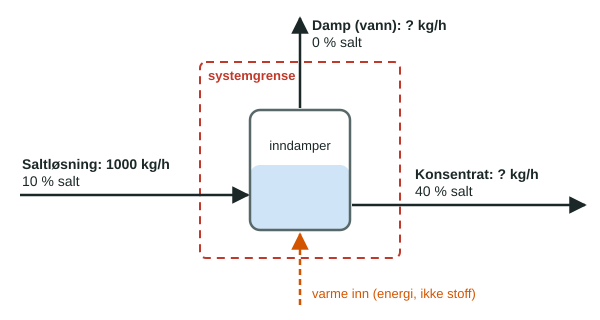

Separasjon
Mange apparater i et prosessanlegg deler én strøm i to. Det kan være produkt og avfall, eller konsentrat og vann. Med en massebalanse kan du regne ut hvor mye som havner i hver strøm, før du har målt det.
Én strøm inn, to strømmer ut
Å skille stoffer fra hverandre kalles separasjon. Noen eksempler fra industrien:
- En inndamper koker bort vann fra en løsning, slik at løsningen blir mer konsentrert.
- Et filter holder igjen faste partikler og slipper væsken gjennom.
- En destillasjonskolonne skiller væsker med ulikt kokepunkt.
Hvordan apparatene er bygd og virker, lærer du i Enhetsoperasjoner. Her regner vi bare på hva som går inn og ut.
Ofte kjenner du strømmen inn og hvor sterk den ene strømmen ut skal være. Da har du to ukjente: de to strømmene ut. To ukjente trenger to ligninger. Du bruker de to balansene fra Massebalanse i et anlegg:
- Totalbalansen: inn = ut 1 + ut 2
- Stoffbalansen for ett stoff, for eksempel saltet
Eksempel 1: Inndamper

Oppgave: En inndamper får 1000 kg/h saltløsning med 10 % salt. Konsentratet som går ut, skal ha 40 % salt. Dampen er rent vann. Hvor mye konsentrat får du, og hvor mye vann må dampes bort?
Løsning:
- Velg stoffet du starter med: Saltet går bare ut i én strøm, konsentratet. Derfor starter vi med saltbalansen.
- Salt inn: \( 1000 \text{ kg/h} \cdot 0{,}10 = 100 \text{ kg/h} \)
- Salt ut: Alt saltet havner i konsentratet, og 40 % av konsentratet er salt: \[ \text{konsentrat} = \frac{100 \text{ kg/h}}{0{,}40} = 250 \text{ kg/h} \]
- Totalbalanse: \( \text{damp} = 1000 \text{ kg/h} - 250 \text{ kg/h} = 750 \text{ kg/h} \)
- Sjekk med vannbalansen: Vann inn er \( 1000 - 100 = 900 \text{ kg/h} \). Vann ut er 750 kg/h som damp pluss \( 250 - 100 = 150 \text{ kg/h} \) i konsentratet, til sammen 900 kg/h. Det stemmer.
Svar: Inndamperen gir 250 kg/h konsentrat, og 750 kg/h vann må dampes bort.
Å koke bort 750 kg vann i timen krever mye energi. I Varme og energi i prosesser regnet du ut den varmeeffekten. Massebalansen forteller hvor mye vann som skal fordampes, og først da kan du regne ut energien.
Eksempel 2: Filter
Et filter i et anlegg får inn slam, som er væske med faste partikler i. Det faste stoffet blir liggende igjen som en filterkake. Væsken som renner gjennom, kalles filtrat. Filterkaka er aldri helt tørr, for det blir alltid litt væske igjen mellom partiklene.
Oppgave: Et filter får 2000 kg/h slam med 15 % faststoff. Vi regner med at alt faststoffet blir i filterkaka, og at kaka er 60 % faststoff og 40 % væske. Hvor mye filterkake og hvor mye filtrat får du?
- Faststoff inn: \( 2000 \text{ kg/h} \cdot 0{,}15 = 300 \text{ kg/h} \)
- Filterkake: Alt faststoffet er i kaka, og det utgjør 60 % av den: \[ \text{filterkake} = \frac{300 \text{ kg/h}}{0{,}60} = 500 \text{ kg/h} \]
- Totalbalanse: \( \text{filtrat} = 2000 \text{ kg/h} - 500 \text{ kg/h} = 1500 \text{ kg/h} \)
- Sjekk med væskebalansen: Væske inn er \( 2000 - 300 = 1700 \text{ kg/h} \). Væske ut er \( 1500 + 200 = 1700 \text{ kg/h} \). Det stemmer.
Svar: Filteret gir 500 kg/h filterkake og 1500 kg/h filtrat.
I virkeligheten slipper litt faststoff gjennom filteret. Da inneholder filtratet litt partikler, og regnestykket blir et overslag. Måler du for mye faststoff i filtratet, kan det bety at filterduken er skadet.
Start med stoffet som bare går ut i én av strømmene. Det var saltet i inndamperen og faststoffet i filteret. Da får du én ukjent og kan regne den ut direkte. Den andre strømmen finner du med totalbalansen. Til slutt sjekker du svaret med en balanse du ikke har brukt.
En inndamper har varme flater og damp under trykk, og damp kan gi alvorlige brannskader. Åpne aldri luker eller flenser før anlegget er avkjølt og trykkløst. Prøver tas bare fra faste prøvetakingspunkter, etter prosedyren og med verneutstyr. Filterkake og filtrat kan inneholde kjemikalier. Sjekk sikkerhetsdatabladet, og bruk verneutstyret som prosedyren krever.
Test deg selv
1. Et apparat som skiller én strøm i to, får 1200 kg/h inn. Den ene strømmen ut er 900 kg/h. Hvor stor er den andre? Det er ingen opphopning.
- 300 kg/h
- 900 kg/h
- 2100 kg/h
Totalbalanse: 1200 = 900 + ut 2, så ut 2 = 300 kg/h.
2. I en inndamper går saltløsning inn, og damp og konsentrat går ut. Hvilken stoffbalanse er lurest å starte med?
- saltet, fordi det bare går ut i én strøm
- vannet, fordi det er mest av det
- dampen, fordi den går ut på toppen
Saltet er bare i konsentratet. Da gir saltbalansen konsentratstrømmen direkte.
3. 500 kg/h løsning med 20 % salt dampes inn til 50 % salt. Hvor mye konsentrat får du?
- 200 kg/h
- 250 kg/h
- 300 kg/h
Salt inn: 500 · 0,20 = 100 kg/h. Konsentrat: 100 / 0,50 = 200 kg/h. Da dampes 300 kg/h vann bort.
4. Hvorfor er varmen til inndamperen ikke med i massebalansen?
- fordi varmen er så liten at den ikke betyr noe
- fordi varme er energi og ikke stoff
- fordi varmen går ut igjen med dampen
Massebalansen teller bare stoff. Varmen regnes i en energibalanse.
5. Et filter får 1000 kg/h slam med 10 % faststoff. Alt faststoffet havner i filterkaka, som er 50 % faststoff. Hvor mye filterkake får du?
- 100 kg/h
- 200 kg/h
- 500 kg/h
Faststoff: 1000 · 0,10 = 100 kg/h. Filterkake: 100 / 0,50 = 200 kg/h. Filtratet blir 800 kg/h.
Ordliste
| Begrep | Forklaring | Engelsk |
|---|---|---|
| separasjon | Å skille stoffer i en blanding fra hverandre, slik at én strøm blir til to eller flere. | |
| inndamper | En beholder der en løsning varmes slik at vannet koker bort og løsningen blir mer konsentrert. | evaporator |
| konsentrat | Den sterke løsningen som blir igjen når noe av løsemiddelet er fjernet, for eksempel i en inndamper. | |
| slam | En væske med faste partikler blandet i. | slurry |
| filterkake | Laget av fast stoff som blir liggende igjen på filteret. Det inneholder alltid litt væske. | filter cake |
| filtrat | Væsken som har gått gjennom filteret. | filtrate |
Les mer
- Forrige side: Massebalanse i et anlegg (systemgrense, totalbalanse og stoffbalanse).
- Energien til inndamperen: Varme og energi i prosesser.
- Hvordan apparatene virker: Enhetsoperasjoner.
Om kildene: Teksten, eksemplene og figurene på denne siden er laget for dette nettstedet. Siden bygger på undervisningsopplegg i kjemiprosess- og laboratoriefag ved Sauda vgs, som er utarbeidet med utgangspunkt i blant annet Kjemien stemmer, Laboranten og åpne nettkilder.